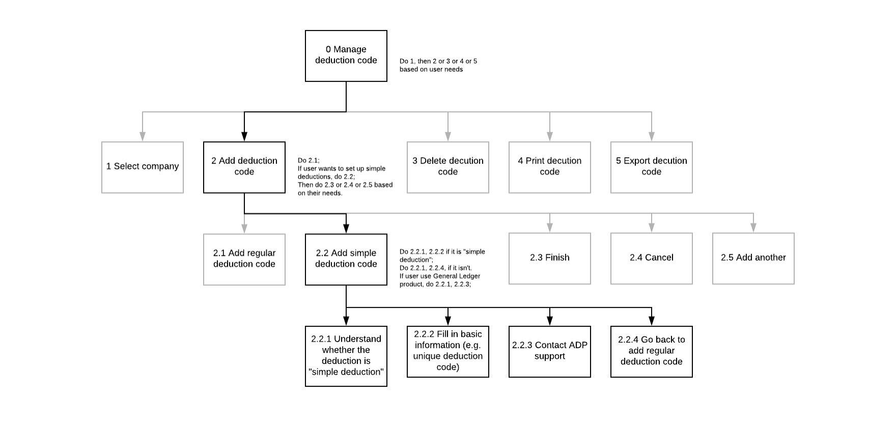

The primary objective is to reduce calls to the Help Desk and to provide self-service capability for the user. According to the document, there are three major problems in adding a simple deduction:
Considering the limited time this project will focus on solving the listed problem and improve the usability.
A InVision prototype.
Users do not add simple deductions very often (once or twice a year) but it is a very important task and users need to set this up correctly to avoid a problem in payroll.
After understand the context I conducted hierarchical task anlaysis to understand the detailed tasks. I separated simple deduction from the other deduction becuase: 1. We want to encourage user to add simple deduction on themselves; 2. Simple deduction takes almost 80% of all deductions.
I also analyzed the user flow and identified usability problems in the flow.
As you can see in the user flow, there is only one step related to "thinking up a unique code". So when user think about the unique code we could:
Consider that users may have their own rules to generate deduction codes the first idea may won't work. So I decide to use a combination of the second and third idea.
As you can see in the user flow, users need to complete three steps to successully add a simple deduction code:
There are two major problems. First, if users don't choose "other" they even won't be aware of "simple deduction" while it takes almost 80% of deductions. So we need to put sit in a more noticeable place. Second, users need to confirm twice to actually check the "simple deduction" box. At the meantime, they need to read and comprehend the qualification of it. What users really need here are: 1. Being told whether simple deduction could be applied to their situation; 2. Being aware of advantages of simple deductions; 3. Understanding it's not that risky to to use simple deduction. The solution could be:
This design puts simple deduction in a noticeable place and the description under it explains the advantage of simple deduction. Users need to check the qualification first. If their deductions aren't qualified for simple deduction they will be suggested to use reglar deduction (which is the original setup) instead.
In this design, users can see the latest code they generated for this company and check availability of their input. Certain fields (e.g. category) are pre-selected and it's frozen so that users couldn't make changes on these fields. Users also need to check the agreement to continue. If users change their mind they can also easily go back to regular deduction at any time they want.
{kind=link}
{kind=link}
{kind=link}
{kind=link}
{kind=link}
{kind=link}
{kind=link}